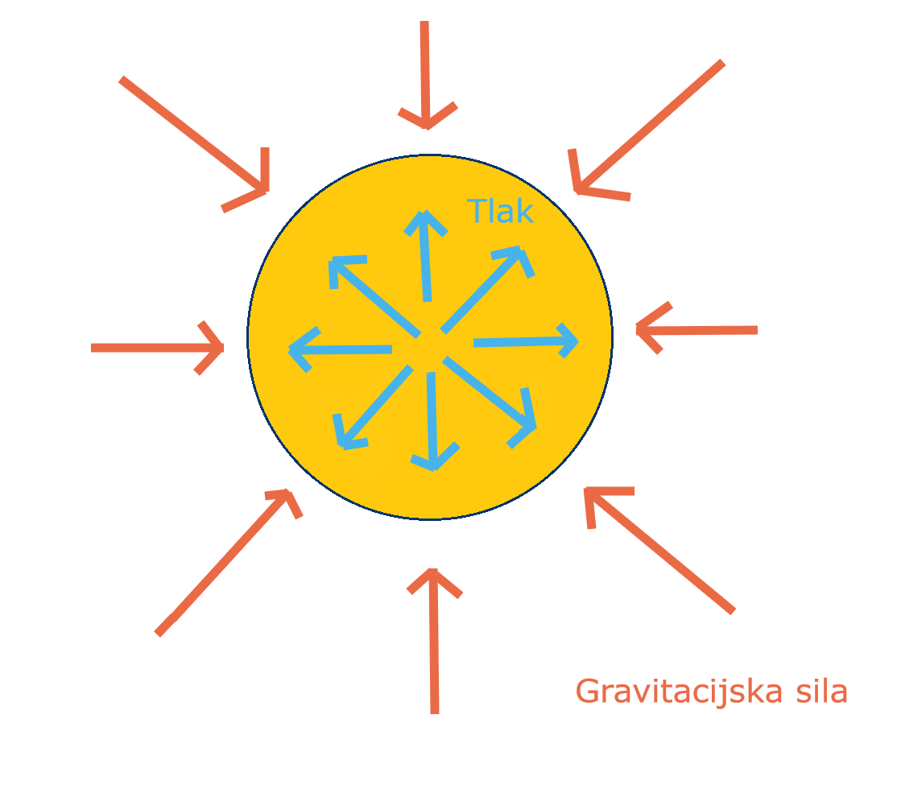

Unutrašnjost svake stabilne zvijezde nalazi se u hidrostatskoj ravnoteži (eng. Hydrostatic equilibrium) zbog balansa postavljenog između
dvaju tlakova i dviju sila. Prva sila, također i jedna od četiri elementarne sile, je gravitacijska sila, dok je druga sila ona koja nastaje
kao rezultat nuklearnih reakcija i razlike u tlakovima u središtu zvijezde i na površini zvijezde. Gravitacijska sila djeluje od površine
zvijezde prema središtu iste, a druga sila djeluje iz središta prema van zbog toga što su tlak i temperatura u središtu veći i nastojeći
izjednačiti te razlike stvara se sila koja je orijentirana prema površini. Takva ravnoteža neće se mijenjati iako se masa zvijezde postupno
smanjuje, čime se smanjuje i gravitacijska sila pa s obzirom na to da će tada gravitacijska sila manje pritiskati plazmu
prema središtu gdje se odvija najviše nuklearnih reakcija, njih će biti manje i stvarat će se slabija protu-sila, sličan odnos dviju sila
kao u 3. Newtonovom zakonu.
Gravitacijska sila također je odgovorna i za najveći dio same strukture zvijezde jer upravo ona "gura" novonastale atome težih elemenata
prema jezgri zvijezde, gdje se tako počinje stvarati kugla izgrađena od težih elemenata koja se postupno širi i time pomiče zonu u
kojoj se odvija najviše nuklearnih reakcija .

Odnos dviju sila u zvijezdi
Za stabilnost svake zvijezde važna je i toplinska ravnoteža, ne samo tlačna, jer znamo kako temperature nisu ni približno jednake u središtu
i na površini zvijezde (zbog toga što se egzotermne nuklearne reakcije uglavnom odvijaju u jezgri zvijezde, koju onda i zagrijavaju), a tijelo
koje nema uspostavljenu toplinsku ravnotežu nikako ne može biti stabilno. Toplina tako doista i pokušava doći iz jezgre prema površini,
no relativno brzo nailazi na problem, tzv. zonu radijacije. Zona radijacije je sloj, sferna ljuska u zvijezdi gdje je materija vrlo gusto
nabijena, zbog nakupljanja atoma novonastalih elemenata, i ona usporava ili onemogućuje prijenos topline na standardne načine, kondukcijom, konvekcijom i radijacijom.
Tamo se u potpunosti zaustavlja prijenos topline konvekcijom jer plazma prestaje strujati i miruje, prijenos radijacijom drastično se usporava,
a kondukcija sama po sebi i nije najefikasniji način za prijenos velike količine energije unutar tijela velikog volumena, stoga je takav prijenos
vrlo spor. Prijenos radijacijom preko gama zraka koje putuju brzinom svjetlosti pak je drastično usporen zbog toga što se većina gama zraka
apsorbira unutar zone radijacije u gusto nabijenoj materiji, pa im je potrebno oko 171 000 godina kako bi uspješno prošle kroz zonu radijacije.
No usprkos tomu, prijenos topline radijacijom idalje je jedini dovoljno efikasan način da se omogući prijenos topline iz jezgre prema kovnektivnoj
zoni i površini, i zato se ta zona upravo i naziva radijacijskom. Zanimljivo je da je taj prijenos toliko spor, da pad temperature prije i
poslije zone radijacije obično iznosi oko 13,5 milijuna kelvina te je također zanimljivo da se kod nekih zvijezda konvektivna zona nalazi
bliže jezgri nego radijacijska, dok kod nekih manjih zvijezda, zona radijacije niti ne postoji .
Nakon zone radijacije i prijelazne zone, u unutrašnjosti zvijezde, slijedi konvektivna zona. Kao što joj i samo ime govori u njoj dolazi
do pojave konvekcije i prijenosa topline konvekcijom, tj. miješanjem plazme iz dubine koja je toplija i površinske plazme koja je hladnija. Ona
također čini i posljedni sloj prije onog površinskog, fotosfere. Fotosfera je poput plinovite kore zvijezde, smatra ju se i najnižijim slojem
zvjezdane atmosfere iako stvara dojam kao da je dio površine zvijezde i jedini je sloj u odnosu na sve prethodne,
koji je vidljiv iz svemira. U njoj konačno dolazi do emisije energije u svemir, što one toplinske koja je dugo putovala iz jezgre, a što
one svjetlosne koja će se nastaviti širiti kroz svemir i na koncu eventualno dospijeti do naših očiju ukoliko bismo promatrali neku zvijezdu.
Na njoj se mogu nalaziti i prije spomenute pojave, zvjezdane pjege. Govoreći o obilježjima zvijezde, spomenuli smo i zvjezdane baklje, usko
vezane uz pjege, no one se ne pojavljuju u samoj fotosferi, već u sloju iznad, tj. kromosferi. Kromosfera je prosječno visoka oko 2 000
kilometara i toplija je od fotosere. Na nju se nastavlja prijelazni sloj koji je obično vrlo visok i u njemu se događa porast temperature
i pad gustoće atmosfere, a na njega se nadovezuje korona. Korona ima vrlo malu gustoću, no temperatura u njoj može dostići i vrijednosti
od 1 000 000 K, što znanstvenici i dan danas ne mogu zasigurno objasniti. Iz nje će se dalje u svemir širiti zvjezdani vjetar, a ako uvjeti
za to budu ostvareni širit će se i zvjezdana maglica.